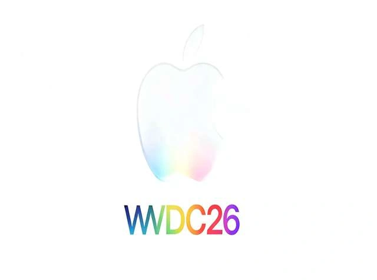
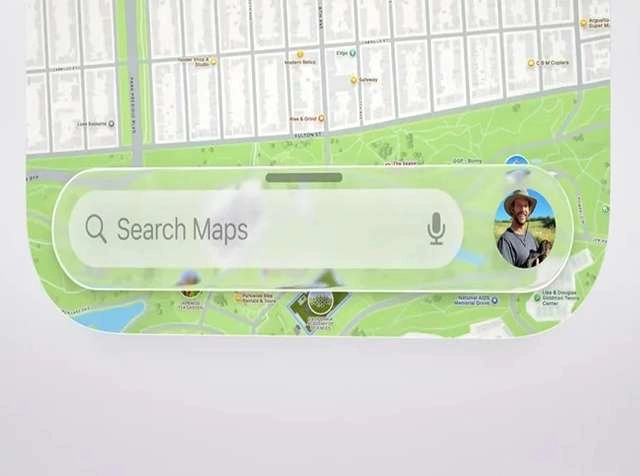
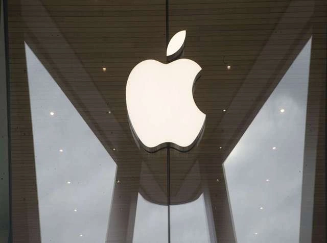

Apple's iOS 27 and iPadOS 27 are expected to debut at the 2026 Worldwide Developers Conference, and there's talk of a tweak to the Liquid Glass design. Word has it that these updates will focus on improving the current Liquid Glass aesthetic, rather than introducing a brand-new visual overhaul.
Mark Gurman's insights suggest Apple will likely build on the "Liquid Glass" aesthetic it debuted in the last software update. This was a significant visual refresh, the most substantial the company had attempted in ten years, first shown off at WWDC 2025. Rather than a complete redesign, Apple is expected to implement gradual improvements to both how things work and how well they perform.
Internal builds suggest that Apple's design philosophy will continue to prioritize glass-like interface elements. Translucent navigation bars, widgets, icons, and buttons will continue to be a core element of the user experience, regardless of the operating system.



Why This News Matters:
The new features coming to iOS 27 and iPadOS 27 show that Apple is improving its software instead of starting over from scratch. Apple seems to be more interested in polishing the "Liquid Glass" interface, making it easier to use, and getting its ecosystem ready for new devices like foldable iPhones and more advanced AI features than in doing another big redesign.
Liquid Glass Interface Will Continue with Refinements
Apple's Liquid Glass interface added layered transparency effects to system elements like search boxes, buttons, and app navigation bars. The design was influenced by visionOS, the operating system used on Apple's Vision Pro headset, and was intended to provide a consistent visual experience across all Apple devices.
While the design was generally praised for its aesthetic qualities, it wasn't without its detractors. A few users found the text and icons difficult to read when they blended with transparent components. Apple has already begun to improve the UI by releasing upgrades such as iOS 26.4 to address these concerns.
Engineers have also considered adding a system-wide slider that allows users to change the degree of the glass effect, but integrating it across the entire interface has been extremely difficult.
Despite leadership changes with the resignation of previous design chief Alan Dye, the corporation is unlikely to abandon the design language, which was created by a vast team of engineers and designers over several years.
Software Changes Designed for a Foldable iPhone
The most buzzed-about improvements slated for iOS 27 are, unsurprisingly, the software tweaks tailored for the rumored foldable iPhone, often dubbed the iPhone Fold. Reports indicate that Apple's engineers are developing flexible interface designs that adapt as the device opens.
When fully extended, apps might resemble their iPad counterparts, with navigation bars anchored to the left side of the screen, capitalizing on the expanded real estate. Additionally, Apple is preparing to launch split-screen multitasking on the iPhone. This marks a first for the device, enabling users to simultaneously operate two applications on the larger, unfolded display.
These tweaks aim to ensure that apps, regardless of their origin, function seamlessly on a larger, foldable screen.
AI Development and Siri Delays Affect Product Plans
Apple's future software endeavors are heavily reliant on substantial investments in artificial intelligence, specifically for iOS, iPadOS, and macOS. The goal of developing a next-generation Siri — internally known as "Campo" — is to make the assistant more conversational and context aware.
However, delays with the improved Siri platform are apparently delaying other devices, including Apple's planned smart home hub. The company is also looking into integrating with external AI technologies like Gemini, as well as enhancing system stability and reliability across all of its operating systems.
Apple’s Strategy: Gradual Evolution Instead of Major Redesigns
Apple's approach appears to prioritize incremental improvements over sweeping redesigns. We can anticipate substantial updates to the Liquid Glass interface before its eventual debut, mirroring the design adjustments that came after the original iOS launch seven years prior.
Apple aims to keep its design language unified across its entire product line, refining existing designs and enhancing functionality simultaneously. They're also preparing their software ecosystem for emerging hardware, including foldable smartphones and advanced AI-driven services.
The 2026 WWDC is anticipated to showcase design tweaks, deeper AI integration, and platform enhancements, rather than a complete redesign.
What to Watch Next:
Apple is likely to talk about the changes at the Apple Worldwide Developers Conference (WWDC).
Support for a folding iPhone? The recent tweaks to the interface could be a subtle clue about Apple's intentions regarding a foldable phone.
Better AI: This new software could place a greater emphasis on Siri and similar AI capabilities compared to earlier versions.
Apple will probably continue to refine the Liquid Glass design, aiming to make the interface more intuitive and easier to read.